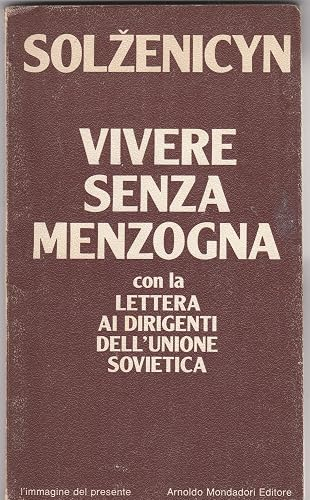

16:02 · 1 OPERA
Aleksandr Solženicyn, Vivere senza menzogna.
Il filo del discorso
La lettura di Vivere senza menzogna affronta il passaggio dal sentimento di impotenza alla responsabilità personale. Solženicyn lega la durata della violenza alla partecipazione quotidiana alle sue falsificazioni e propone di cominciare dal rifiuto di affermare ciò che non si crede vero. Una serie di esempi riguarda parole, pubblicazioni, riunioni e gesti di consenso. Il finale riconosce i costi della scelta e collega l’indipendenza dello spirito alla possibilità di unirsi ad altri senza ricorrere alla violenza.
I libri nel discorso

Vivere senza menzogna
Note sul riferimento
Copertina del volume contenente il saggio: Mondadori · L’immagine del presente 28 · 1974
Fotografia di un esemplare Mondadori del 1974 che contiene Vivere senza menzogna e la Lettera ai dirigenti dell’Unione Sovietica. Il volume è un riferimento bibliografico: l’edizione e la traduzione lette nel video non sono identificate.
Autore e titolo annunciati all’inizio; il finale ricorda Mosca e il 12 febbraio 1974.